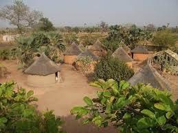

Présentation
Les campements de baobabs sont des hébergements traditionnels situés dans la région de Banfora. Ils permettent aux visiteurs de séjourner dans des cases construites autour de majestueux baobabs, arbres emblématiques de l’Afrique de l’Ouest. Ces campements offrent une immersion totale dans la nature et sont souvent utilisés comme points de départ pour explorer les sites touristiques de la région.
Historique
La région de Banfora a toujours été un carrefour culturel et commercial. Les campements de baobabs ont été créés pour offrir aux voyageurs une expérience authentique, proche de la nature. Ces campements sont inspirés des habitats traditionnels des peuples locaux, qui utilisaient les baobabs comme points de repère et lieux de rassemblement.
Informations Pratiques
Hébergement en cases traditionnelles :Les campements offrent des logements simples mais confortables.
Expérience immersive :Les visiteurs peuvent déguster des plats locaux et profiter de nuits sous les étoiles.